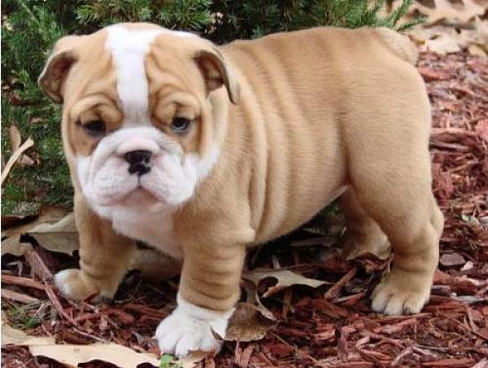

BULDOG
Početna
Pomeranac
Mops
Buldog
Naručite
Kontakt
Osnovne karakteristike:
Buldog je pas koji je oličenje vernosti, prepoznatljiv po fizičkim izgledom i „četvrtastom“
građom. Po samom imenu poznato je sa kog područja dolazi. Iako su preci daleko ukorenjeni u
rane vekove i Englesko podneblje, današnji izgled koji ima engleski buldog nije ni sličan prvobitnom.
Čuvena karakteristika koja se ističe kod ove rase jeste neodoljiva lenjost, koju prati isto tako
prepoznatljiv fizički izgled. „Nagužvana“ njuška, širok raspon kratkih nogu i prilično „tužan“ pogled,
nešto su što svaki poznavalac pasa zna da je deo pojave engleskog buldoga. Tačno je i da dosta ostavlja
utisak agresivnosti i opasnosti, ali generalno su vrlo mirni, dopadljivi i umiljati. Ako želite bucmastog,
raspoloženog i vedrog kućnog ljubimca, koji će vas svakodnevno osvajati svojim pustolovinama i aktivnostima,
engleski buldog je pravi izbor za vas.Engleski buldog je rasa koja je poznata kao borbena, što je dokazano u
arenama u najranijim periodima. Tada je do izražaja dolazio jak ugriz, agresija, velika snaga i izdržljivost,
što je rezultiralo odličnim rezultatima i brojnim pobedama. To su činjenice i karakteristike koje se vezuju
za najranije viđene engleske buldoge, a danas su odlika velikih suprotnosti u poređenju sa tim vremenom.
